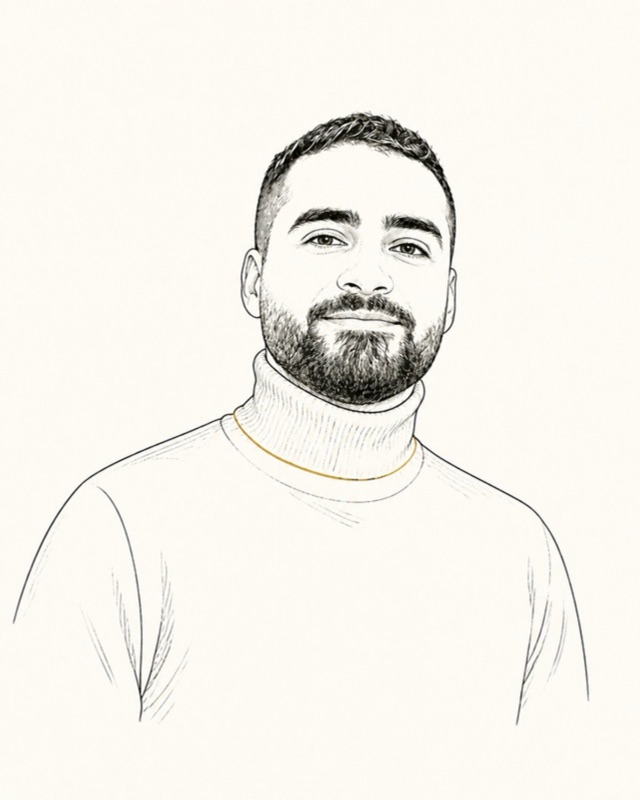
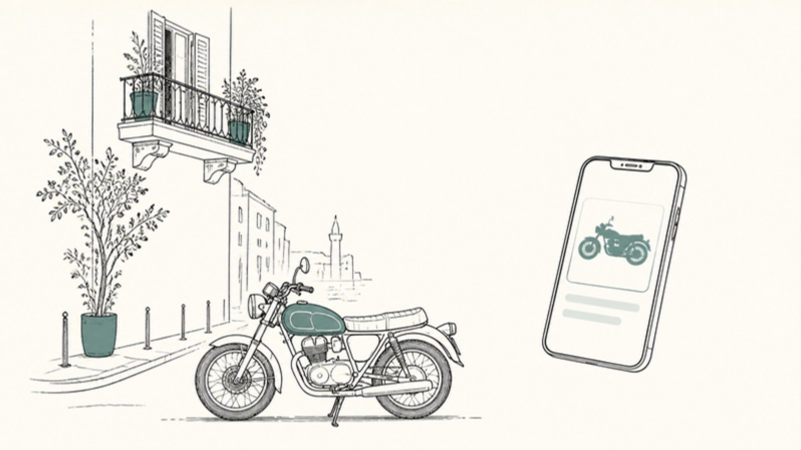

Senior Android & Kotlin Multiplatform engineer · Beirut
Mohammad Jaber
I build banking apps for Android and iOS with Kotlin Multiplatform and Compose Multiplatform. On the side, I'm making a motorcycle marketplace for Lebanon.
I've been building Android apps since 2021, for a dental marketplace, a telecom and now a bank. These days most of what I write is Kotlin Multiplatform, so the same code also runs on iOS and the desktop.
2023 to nowNeo
Senior Android engineer at Neo MENA Technologies, a fintech company in Beirut.
At Neo I build a Gulf bank's investment app with Kotlin Multiplatform and Compose Multiplatform. It is the whole app, from onboarding and ID checks through to funds and brokerage holdings, on Android and iOS from one Kotlin codebase.
I built the first prototype and wrote most of the architecture decisions down, so new people can read why things are the way they are. I also built the security side. Requests are signed with keys held in the Android Keystore and the iOS Secure Enclave, certificates are pinned, and the app checks for rooted or tampered devices.
2025 to nowYavero Auto
A place to buy a motorcycle in Lebanon. In beta at auto.yavero.io.
Dealerships list the bikes they have, and buyers browse and chat with them in the app. I founded Yavero Labs and I write all of the mobile code. A teammate writes the backend.
One Kotlin Multiplatform project builds three apps. The buyer app and the dealer app run on Android and iOS, and a small desktop app handles admin work. They're in beta through TestFlight and Firebase App Distribution and aren't in the stores yet.

early 2026Salzburg
My solo entry for the Amazon Nova Hackathon, February to March 2026.
It reads your stock portfolio, pulls in live prices and news, and writes up what looks risky and why, with the evidence cited. The rule I cared about most was that the model never sets the risk score. A plain rules engine does that. The model does the digging and explains what it found.
You can ask it what-ifs, like swapping one stock for another, and it simulates the change before applying it. Underneath it's Kotlin Multiplatform again, with a Ktor server and Amazon Nova on Bedrock. The code is private.
on the sideSmaller things
- Kothless
- A passwordless login library for Kotlin Multiplatform. The keys live in the Android Keystore or the iOS Secure Enclave.
- Brief
- A Python tool that reads a Splunk app and tells you how ready it is for AI agents. Another hackathon.
- lokala
- A small self-hosted server for managing an app's translation strings.
- Aterna
- A focus app, built with Decompose and SQLDelight.
- A shop system
- A desktop point-of-sale and inventory app for a jewelry retailer, with a Ktor backend.
2021 to 2023Before that
I was at Monty Mobile for two years, where I rebuilt the Monty eSIM app in Jetpack Compose and ran the Android releases. Before Monty I spent a few months at Toothpick, a marketplace app for dentists, shipping features and fixing bugs in an old Java codebase.
I studied computer science at the Lebanese University and got the JetBrains Kotlin certificate in 2023.
toolsWhat I use
Kotlin, mostly. Compose on Android and across platforms, coroutines, Ktor, Koin, and a fair amount of Gradle plumbing. For tests I reach for Maestro, Roborazzi and Konsist. I've spent a lot of time on mobile security, and lately on agents with Bedrock and MCP. In my spare time I do TryHackMe rooms.
contactSay hello
Email is the best way to reach me.
- emailmhammadjaber00@outlook.com
- linkedinlinkedin.com/in/mj00
- githubgithub.com/moyaver
- cvcv.pdf